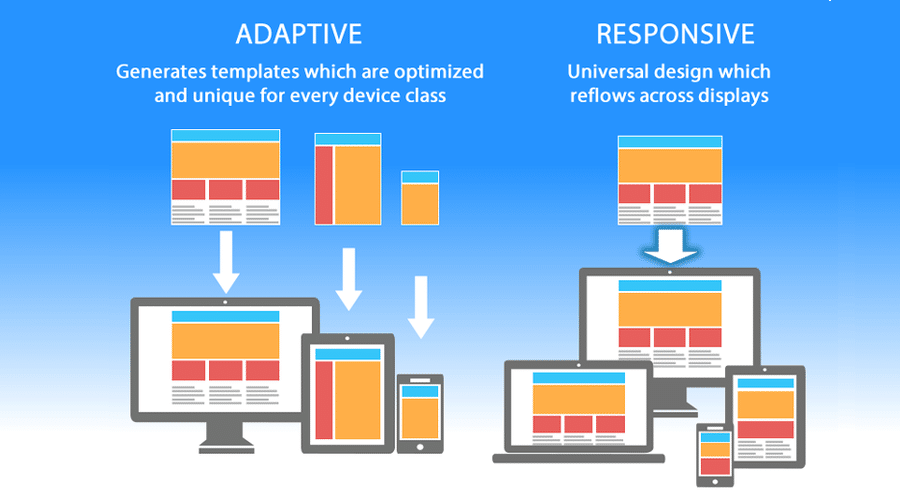

Responsive Design
Responsive design is a crucial aspect of modern web development. It allows websites to automatically adjust their layout and content to provide an optimal viewing experience across various devices, including smartphones, tablets, and desktop computers.
By using media queries and fluid grid systems, responsive design ensures that text, images, and other elements scale and reposition themselves based on the screen size of the device. This approach eliminates the need for separate mobile and desktop versions of the website, streamlining development and maintenance processes.
Mobile-First Approach
A mobile-first approach involves designing and developing websites primarily for mobile devices, with a focus on simplicity and efficiency. By prioritizing the mobile experience, web developers can ensure that the essential content and functionalities are readily accessible to users on small screens.
Starting with a mobile-first strategy allows for a more thoughtful and deliberate design process. As the screen size increases on larger devices, additional features and design elements can be introduced progressively, enhancing the overall user experience.
Performance Optimization
Optimizing website performance is paramount for mobile users. Minimizing loading times, optimizing images, and reducing unnecessary scripts contribute to a faster and smoother browsing experience on mobile devices, improving overall user satisfaction.
By adopting performance optimization techniques, web developers can create responsive and fast-loading websites that deliver an exceptional user experience regardless of the device or network conditions.